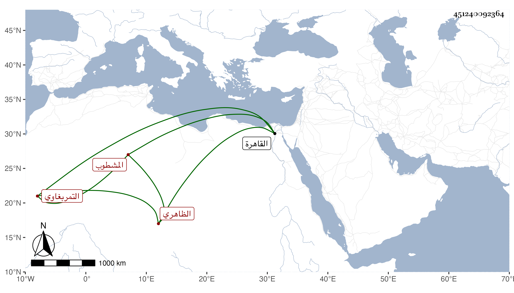

0902Sakhawi.DawLamic.ITO20230111-ara1.EIS1600.451240092364
Biography ID: 451240092364
488
أبو يزيد التمربغاوي تمربغا المشطوب الظاهري برقوق ويدعى بايزيد اتصل بعد استاذه لخدمة الأمير ططر فلما تسلطن عمله خاصكيا ثم صار ساقيا في الدولة الأشرفية برسباي ثم في أواخرها أمير عشرة ثم صار طبلخاناه في أيام اينال ثم قدمه في حدود سنة ستين إلى أن مات في ذي الحجة سنة ثلاث وستين بالقاهرة وكان ساكنا عاقلا متوسط السيرة رحمه الله .
